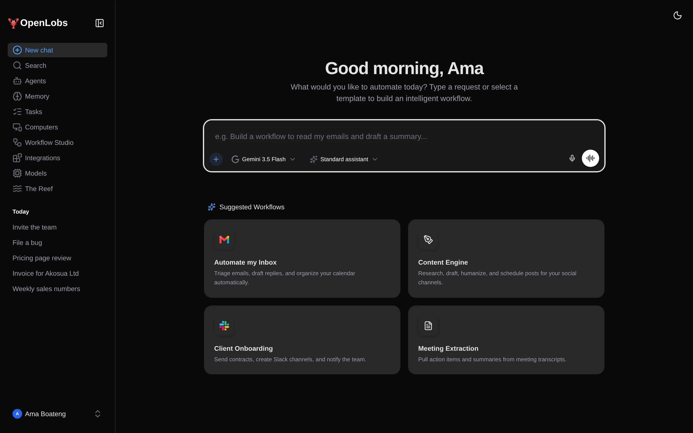

<!doctype html>
<html lang="en"><head><meta charset="utf-8">
<style>
  :root { --ink:#000; --ln:#1c1c1c; --mu:#8c8c8c; --blue:#09f; --violet:#8b5cf6; }
  * { box-sizing: border-box; margin: 0; }
  html, body { width: 1920px; height: 1080px; overflow: hidden; background: var(--ink); font-family: 'Inter', system-ui, sans-serif; color: #fff; -webkit-font-smoothing: antialiased; }
  .bg { position: absolute; inset: 0; background: var(--ink); overflow: hidden; }
  .glow { position: absolute; border-radius: 50%; filter: blur(140px); opacity: .55; }
  .g1 { inset: 0; width: auto; height: auto; border-radius: 0; filter: none; opacity: 1; background: radial-gradient(circle at var(--mx, 50%) 0%, rgba(0,153,255,.22), transparent 62%); }
  .g2 { display: none; }
  .dots { display: none; }
  .vig { position: absolute; inset: 0; background: radial-gradient(ellipse at center, transparent 55%, rgba(0,0,0,.6) 100%); }
  .abs { position: absolute; }
  .word { position: absolute; left: 0; right: 0; text-align: center; font-weight: 500; letter-spacing: -0.05em; line-height: 1; white-space: nowrap; will-change: transform, opacity, filter; }
  .coral { background: linear-gradient(90deg, #09f, #8b5cf6); -webkit-background-clip: text; background-clip: text; color: transparent; }
  .logo { position: absolute; will-change: transform, opacity; }
  .chip { position: absolute; padding: 18px 34px; border-radius: 999px; font-weight: 500; font-size: 38px; letter-spacing: -0.03em; background: #111; border: 1px solid #232323; white-space: nowrap; will-change: transform, opacity; }
  .shot { position: absolute; border-radius: 22px; overflow: hidden; box-shadow: 0 50px 120px -30px rgba(0,0,0,.9), 0 0 0 1px #262626; background: #000; will-change: transform, opacity; }
  .shot img { display: block; width: 100%; height: 100%; object-fit: cover; object-position: top left; }
  .phone { border-radius: 54px; box-shadow: 0 50px 120px -20px rgba(0,0,0,.8), 0 0 0 10px #101010, 0 0 0 11px #2a2a2a; }
  .cap { position: absolute; font-weight: 500; letter-spacing: -0.05em; will-change: transform, opacity; }
  /* tutorial pieces */
  .term { position: absolute; background: #0a0a0a; border-radius: 22px; box-shadow: 0 50px 120px -30px rgba(0,0,0,.9), 0 0 0 1px #262626; overflow: hidden; }
  .term .bar { height: 54px; display: flex; align-items: center; gap: 10px; padding: 0 22px; background: #111; font: 500 20px Inter; color: #777; }
  .term .bar i { width: 14px; height: 14px; border-radius: 50%; background: #2a2a2a; display: block; }
  .term pre { font: 500 34px/1.55 'DejaVu Sans Mono', monospace; padding: 34px 40px; color: #e8eaf2; white-space: pre-wrap; }
  .term .p { color: #59e07a; } .term .c { color: #666; } .term .k { color: #7fb0ff; }
  .caret { display: inline-block; width: 18px; height: 34px; background: #e8eaf2; vertical-align: -6px; margin-left: 2px; }
  .stepno { position: absolute; font-weight: 300; letter-spacing: -0.06em; }
  .note { position: absolute; font-weight: 500; color: rgba(255,255,255,.62); letter-spacing: -0.01em; }
  .card { position: absolute; border-radius: 26px; background: #050505; color: #fff; border: 1px solid #1c1c1c; box-shadow: 0 50px 120px -30px rgba(0,0,0,.9); }
</style></head>
<body>
<div class="bg" id="bg"><div class="glow g1" id="g1"></div><div class="glow g2" id="g2"></div><div class="dots"></div><div class="vig"></div></div>
<div id="root"></div>
<script>
const $ = (h) => { const d = document.createElement('div'); d.innerHTML = h.trim(); return d.firstChild }
const clamp = (x, a = 0, b = 1) => Math.min(b, Math.max(a, x))
const seg = (t, a, b) => clamp((t - a) / (b - a))
const eo3 = x => 1 - Math.pow(1 - x, 3)
const eo5 = x => 1 - Math.pow(1 - x, 5)
const ei3 = x => x * x * x
const eio = x => x < .5 ? 4 * x * x * x : 1 - Math.pow(-2 * x + 2, 3) / 2
const back = x => { const c1 = 1.9, c3 = c1 + 1; return 1 + c3 * Math.pow(x - 1, 3) + c1 * Math.pow(x - 1, 2) }
const root = document.getElementById('root'), g1 = document.getElementById('g1'), g2 = document.getElementById('g2')
const LOGO = ''
// The glow never moves: every scene (and the edited footage) sits on the same background, so cuts never jump.
function ambient() {
  g1.style.setProperty('--mx', '50%')
}
const scenes = {}

/* ---------- intro: three beats ---------- */
scenes.intro = { dur: 3.0, build() {
  const w = ['Delegate.', 'Verify.', 'Approve.']
  this.w = w.map((s, i) => { const e = $(`<div class="word ${i === 2 ? 'coral' : ''}" style="top:${i === 2 ? 392 : 400}px;font-size:${i === 1 ? 200 : 230}px">${s}</div>`); root.appendChild(e); return e })
  this.logo = $(`<div class="logo" style="left:60px;top:54px;width:70px;height:70px">${LOGO}</div>`); root.appendChild(this.logo)
  this.name = $(`<div class="abs" style="left:146px;top:62px;font-weight:600;font-size:40px;letter-spacing:-.04em">OpenLobs</div>`); root.appendChild(this.name)
}, draw(t) {
  ambient(t)
  this.w.forEach((e, i) => {
    const a = i * 1.0, p = seg(t, a, a + .34), o = seg(t, a + .78, a + 1.0)
    const last = i === 2
    const s = .72 + .28 * back(p)
    const out = last ? 0 : eo3(o)
    const xo = last ? -eo3(seg(t, 2.7, 3.0)) * 420 : 0
    e.style.opacity = clamp(p * 2) * (1 - out) * (last ? 1 - seg(t, 2.8, 3.0) : 1)
    e.style.transform = `translate(${xo}px, ${(1 - eo5(p)) * 80 - out * 60}px) scale(${s + out * .12})`
    e.style.filter = `blur(${(1 - p) * 22 + out * 16}px)`
  })
  const lp = seg(t, .1, .6); this.logo.style.opacity = lp; this.name.style.opacity = lp
  this.logo.style.transform = `rotate(${(1 - eo3(lp)) * -25}deg) scale(${.6 + .4 * back(lp)})`
}}

/* ---------- montage: light, dark, phone ---------- */
scenes.bg = { dur: 1, build() {}, draw(t) { ambient() } }
scenes.montage = { dur: 4.0, build() {
  const mk = (src, l, t, w, h, cls = '') => { const e = $(`<div class="shot ${cls}" style="left:${l}px;top:${t}px;width:${w}px;height:${h}px"></div>`); root.appendChild(e); return e }
  this.a = mk('tasks-light', 120, 190, 1120, 700)
  this.b = mk('workflow-canvas-dark', 520, 130, 1120, 700)
  this.c = mk('m-chat-trace-dark', 1330, 130, 380, 822, 'phone')
  this.t1 = $(`<div class="cap" style="left:120px;top:90px;font-size:82px">Light theme.</div>`); this.t2 = $(`<div class="cap" style="left:120px;top:90px;font-size:82px;color:#fff">Dark theme.</div>`); this.t3 = $(`<div class="cap coral" style="left:120px;top:90px;font-size:82px">On mobile.</div>`)
  ;[this.t1, this.t2, this.t3].forEach(e => root.appendChild(e))
}, draw(t) {
  ambient(t, 2)
  const pa = seg(t, 0, .6), pb = seg(t, 1.2, 1.85), pc = seg(t, 2.35, 3.0), end = seg(t, 3.6, 4.0)
  const slide = (e, p, fromX, toX, y, rot = 0, sc = 1) => { e.style.opacity = clamp(p * 3) * (1 - end); e.style.transform = `translate(${fromX + (toX - fromX) * eo5(p)}px, ${y + end * 40}px) rotate(${rot * eo3(p)}deg) scale(${sc})` }
  slide(this.a, pa, 1500, 0, (1 - eo3(pa)) * 40 - 20 * seg(t, 0, 4), -1.2)
  slide(this.b, pb, 1500, 120, 190 - 190 + 90 * seg(t, 1.2, 4) - 40, 1.4)
  slide(this.c, pc, 900, 0, (1 - eo3(pc)) * 120, 2.2)
  const cap = (e, a, b) => { const p = seg(t, a, a + .3), q = seg(t, b - .25, b); e.style.opacity = p * (1 - q); e.style.transform = `translateY(${(1 - eo5(p)) * 40 - q * 30}px)`; e.style.filter = `blur(${(1 - p) * 10 + q * 8}px)` }
  cap(this.t1, .1, 1.3); cap(this.t2, 1.3, 2.45); cap(this.t3, 2.45, 3.85)
}}

/* ---------- outro: logo + promise ---------- */
scenes.outro = { dur: 5.0, build() {
  this.logo = $(`<div class="logo" style="left:${960 - 90}px;top:210px;width:180px;height:180px">${LOGO}</div>`); root.appendChild(this.logo)
  this.name = $(`<div class="word" style="top:420px;font-size:170px">OpenLobs</div>`); root.appendChild(this.name)
  this.tag = $(`<div class="word" style="top:610px;font-size:62px;letter-spacing:-0.035em;color:rgba(255,255,255,.88)">An assistant that checks its work and asks first.</div>`); root.appendChild(this.tag)
  const items = ['Free to start', 'Open source', 'Bring your own keys', 'Runs on your computer']
  const widths = [330, 310, 450, 530], gap = 26, total = widths.reduce((a, b) => a + b, 0) + gap * 3
  let x = 960 - total / 2
  this.chips = items.map((s, i) => { const e = $(`<div class="chip" style="left:${x}px;top:790px;width:${widths[i]}px;text-align:center">${s}</div>`); x += widths[i] + gap; root.appendChild(e); return e })
}, draw(t) {
  ambient(t, 4)
  const lp = seg(t, 0, .7)
  this.logo.style.opacity = clamp(lp * 2)
  this.logo.style.transform = `translateY(${(1 - eo5(lp)) * -260}px) scale(${.5 + .5 * back(lp)}) rotate(${(1 - eo3(lp)) * 20}deg)`
  const np = seg(t, .45, 1.0); this.name.style.opacity = np; this.name.style.transform = `translateY(${(1 - eo5(np)) * 70}px)`; this.name.style.filter = `blur(${(1 - np) * 20}px)`
  const tp = seg(t, 1.3, 1.9); this.tag.style.opacity = tp; this.tag.style.transform = `translateY(${(1 - eo5(tp)) * 40}px)`
  this.chips.forEach((e, i) => { const p = seg(t, 2.0 + i * .25, 2.35 + i * .25); e.style.opacity = p; e.style.transform = `translateY(${(1 - back(p)) * 60}px) scale(${.85 + .15 * back(p)})` })
  const fo = seg(t, 4.55, 5.0); root.style.opacity = 1 - fo
}}

/* ---------- tag: a short sign-off for the feature clips ---------- */
scenes.tag = { dur: 2.5, build() {
  this.logo = $(`<div class="logo" style="left:${960 - 70}px;top:330px;width:140px;height:140px">${LOGO}</div>`); root.appendChild(this.logo)
  this.name = $(`<div class="word" style="top:500px;font-size:130px">OpenLobs</div>`); root.appendChild(this.name)
  this.line = $(`<div class="word" style="top:670px;font-size:44px;font-weight:400;color:rgba(255,255,255,.7);letter-spacing:-0.03em">Open source · Bring your own keys · Runs on your computer</div>`); root.appendChild(this.line)
}, draw(t) {
  ambient()
  const lp = seg(t, 0, .5); this.logo.style.opacity = clamp(lp * 2); this.logo.style.transform = `translateY(${(1 - eo5(lp)) * -160}px) scale(${.6 + .4 * back(lp)})`
  const np = seg(t, .25, .75); this.name.style.opacity = np; this.name.style.transform = `translateY(${(1 - eo5(np)) * 50}px)`; this.name.style.filter = `blur(${(1 - np) * 14}px)`
  const tp = seg(t, .7, 1.2); this.line.style.opacity = tp; this.line.style.transform = `translateY(${(1 - eo5(tp)) * 30}px)`
  root.style.opacity = 1 - seg(t, 2.25, 2.5)
}}


/* ---------- tutorials: step cards with typed commands (illustrated; the commands are the ones in the README) ---------- */
function stepsScene(spec) {
  const total = spec.title ? spec.titleDur : 0
  const steps = []; let at = total
  spec.steps.forEach(st => { steps.push({ ...st, at, end: at + st.dur }); at += st.dur })
  return { dur: spec.tail ? at + spec.tail : at, build() {
    this.head = $(`<div class="abs" style="left:0;right:0;top:420px;text-align:center"><div class="word" style="position:relative;font-size:104px">${spec.title || ''}</div><div class="note" style="position:relative;margin-top:34px;font-size:42px">${spec.sub || ''}</div></div>`); root.appendChild(this.head)
    this.no = $(`<div class="stepno coral" style="left:120px;top:210px;font-size:340px;line-height:1"></div>`); root.appendChild(this.no)
    this.ttl = $(`<div class="abs" style="left:128px;top:560px;width:720px;font-weight:500;font-size:68px;letter-spacing:-.05em;line-height:1.05"></div>`); root.appendChild(this.ttl)
    this.nt = $(`<div class="note" style="left:128px;top:740px;width:700px;font-size:34px;line-height:1.4"></div>`); root.appendChild(this.nt)
    this.prog = $(`<div class="abs" style="left:128px;top:96px;display:flex;gap:12px"></div>`); root.appendChild(this.prog)
    this.dots = Array.from({ length: spec.count || spec.steps.length }, () => { const d = $(`<div style="width:64px;height:8px;border-radius:4px;background:rgba(255,255,255,.18)"></div>`); this.prog.appendChild(d); return d })
    this.term = $(`<div class="term" style="left:930px;top:200px;width:880px;height:640px"><div class="bar"><i></i><i></i><i></i><span style="margin-left:14px">${spec.termTitle || 'Terminal'}</span></div><pre></pre></div>`); root.appendChild(this.term)
    this.pre = this.term.querySelector('pre')
    this.list = $(`<div class="card" style="left:930px;top:200px;width:880px;height:640px;padding:46px 54px"></div>`); root.appendChild(this.list)
    this.foot = $(`<div class="note" style="left:0;right:0;bottom:46px;text-align:center;font-size:26px;color:rgba(255,255,255,.5)">${spec.foot || ''}</div>`); root.appendChild(this.foot)
    this.shot = spec.shot ? $(`<div class="shot" style="left:300px;top:150px;width:1320px;height:780px;background:#000"><div style="height:60px;background:#0e0e0e;display:flex;align-items:center;padding:0 22px;gap:10px"><i style="width:14px;height:14px;border-radius:50%;background:#2a2a2a;display:block"></i><i style="width:14px;height:14px;border-radius:50%;background:#2a2a2a;display:block"></i><i style="width:14px;height:14px;border-radius:50%;background:#2a2a2a;display:block"></i><div style="margin-left:20px;flex:1;height:34px;border-radius:17px;background:#181818;color:#888;font:500 22px Inter;display:flex;align-items:center;padding:0 18px">${spec.shot.url}</div></div></div>`) : null
    if (this.shot) root.appendChild(this.shot)
  }, draw(t) {
    ambient()
    const inTitle = spec.title && t < total
    this.head.style.opacity = inTitle ? clamp(seg(t, .15, .7)) * (1 - seg(t, total - .4, total)) : 0
    this.head.style.transform = `translateY(${inTitle ? (1 - eo5(seg(t, .15, .7))) * 40 : 0}px)`
    const cur = steps.find(s => t >= s.at && t < s.end)
    const show = !!cur && !cur.shot
    ;[this.no, this.ttl, this.nt, this.term, this.list, this.prog].forEach(e => e.style.display = show ? 'block' : 'none')
    this.prog.style.display = show ? 'flex' : 'none'
    this.foot.style.opacity = show || inTitle ? 1 : 0
    if (this.shot) { const ss = steps.find(s => s.shot); const on = ss && t >= ss.at && t < ss.end; this.shot.style.display = on ? 'block' : 'none'; if (on) { const p = seg(t, ss.at, ss.at + .6), q = seg(t, ss.end - .35, ss.end); this.shot.style.opacity = p * (1 - q); this.shot.style.transform = `translateY(${(1 - eo5(p)) * 70}px) scale(${.96 + .04 * eo5(p)})` } }
    if (!show) return
    const i = steps.indexOf(cur), lt = t - cur.at
    const gi = i + (spec.offset || 0)
    this.dots.forEach((d, k) => d.style.background = k < gi ? 'rgba(0,153,255,.5)' : k === gi ? '#09f' : 'rgba(255,255,255,.18)')
    this.no.textContent = cur.no; this.ttl.textContent = cur.title; this.nt.textContent = cur.note || ''
    const a = eo5(seg(lt, 0, .45))
    ;[this.no, this.ttl, this.nt].forEach((e, k) => { e.style.opacity = a; e.style.transform = `translateY(${(1 - a) * (30 + k * 10)}px)` })
    const out = seg(lt, cur.dur - .3, cur.dur)
    this.term.style.opacity = this.list.style.opacity = (1 - out) * clamp(lt * 4)
    this.term.style.transform = this.list.style.transform = `translateX(${(1 - eo5(seg(lt, 0, .5))) * 90 - out * 60}px)`
    if (cur.kind === 'list') {
      this.term.style.display = 'none'; this.list.style.display = 'block'
      this.list.innerHTML = (cur.items || []).map((it, k) => { const p = seg(lt, .6 + k * .5, 1.0 + k * .5); return `<div style="display:flex;gap:20px;align-items:flex-start;margin-bottom:30px;opacity:${p};transform:translateY(${(1 - eo5(p)) * 20}px)"><div style="flex:none;width:44px;height:44px;border-radius:50%;background:#09f;color:#fff;font-weight:500;font-size:26px;display:flex;align-items:center;justify-content:center;margin-top:4px">${k + 1}</div><div style="font-size:35px;line-height:1.3;font-weight:400;letter-spacing:-.03em">${it}</div></div>` }).join('')
    } else {
      this.list.style.display = 'none'
      // typed command lines, then a blinking caret
      let out_ = '', clock = .7
      for (const ln of cur.lines) {
        if (ln.c) { out_ += `<span class="c">${ln.c}</span>\n`; continue }
        const n = Math.floor(Math.max(0, Math.min(ln.cmd.length, (lt - clock) * 30))); clock += ln.cmd.length / 30 + .35
        out_ += `<span class="p">$ </span>${ln.cmd.slice(0, n).replace(/</g, '&lt;')}${n < ln.cmd.length || ln === cur.lines[cur.lines.length - 1] ? '<span class="caret" style="opacity:' + (Math.floor(t * 2.2) % 2 ? 0.15 : 1) + '"></span>' : ''}\n`
        if (n < ln.cmd.length) break
      }
      this.pre.innerHTML = out_
    }
  } }
}
/* ---------- a VS Code window, drawn from a timeline: clone, install, configure, run (illustrated; the commands and output follow the README) ---------- */
const VS_CSS = `
.vsx{position:absolute;left:0;top:0;width:1920px;height:1080px;transform-origin:0 0}
.vw{position:absolute;left:60px;top:34px;width:1800px;height:930px;background:#1e1e1e;border-radius:14px;overflow:hidden;box-shadow:0 60px 140px -30px rgba(0,0,0,.9),0 0 0 1px #2b2b2b;font:15px 'Segoe UI',Inter,system-ui,sans-serif;color:#ccc}
.vt{height:36px;background:#181818;display:flex;align-items:center;justify-content:space-between;padding:0 14px;font-size:13px;color:#9d9d9d;border-bottom:1px solid #2b2b2b}
.vt .m{display:flex;gap:16px}.vt .c{position:absolute;left:0;right:0;text-align:center;pointer-events:none}.vt .w{display:flex;gap:22px;font-size:14px;color:#9d9d9d;position:relative;z-index:1}
.vb{position:absolute;left:0;top:36px;width:50px;bottom:26px;background:#181818;border-right:1px solid #2b2b2b;display:flex;flex-direction:column;align-items:center;gap:6px;padding-top:10px}
.vb i{width:50px;height:46px;display:grid;place-items:center;color:#858585}.vb i.on{color:#fff;box-shadow:inset 2px 0 #0078d4}.vb svg{width:26px;height:26px}
.vs2{position:absolute;left:50px;top:36px;width:300px;bottom:26px;background:#181818;border-right:1px solid #2b2b2b;overflow:hidden}
.vs2 h6{font:400 11px 'Segoe UI',Inter,sans-serif;letter-spacing:.08em;color:#bbb;padding:12px 20px;text-transform:uppercase}
.vs2 .rt{font:700 11px 'Segoe UI',Inter,sans-serif;letter-spacing:.06em;color:#ccc;padding:3px 10px 5px;background:#1f1f1f;text-transform:uppercase}
.vs2 .tr div{height:24px;line-height:24px;font-size:14px;white-space:nowrap;padding-right:10px;color:#cccccc}.vs2 .tr .sel{background:#37373d}.vs2 .tr .d{color:#cccccc}
.vs2 .nf{padding:6px 20px;font-size:14px;line-height:1.5;color:#cccccc}.vs2 .nf p{margin-bottom:14px}.vs2 .nf b{display:block;background:#0e639c;color:#fff;font-weight:400;text-align:center;border-radius:2px;padding:7px;margin-bottom:10px}
.ve{position:absolute;left:350px;top:36px;right:0;height:498px;background:#1e1e1e}
.vtab{display:flex;height:36px;background:#181818;border-bottom:1px solid #2b2b2b}.vtab div{padding:0 18px;display:flex;align-items:center;gap:8px;font-size:14px;color:#8b8b8b;border-right:1px solid #2b2b2b}.vtab div.on{background:#1e1e1e;color:#fff;box-shadow:inset 0 1px #0078d4}
.vc{padding:12px 0;font:15px/24px ui-monospace,Consolas,'DejaVu Sans Mono',monospace;white-space:pre}.vc div{display:block}.vc .n{display:inline-block;width:64px;text-align:right;color:#6e7681;padding-right:22px;flex:none}
.vp{position:absolute;left:350px;right:0;bottom:26px;height:var(--ph,370px);background:#181818;border-top:1px solid #2b2b2b}
.vp .th{display:flex;gap:26px;height:36px;align-items:center;padding:0 20px;font-size:12px;letter-spacing:.04em;color:#8b8b8b;text-transform:uppercase}.vp .th b{font-weight:400;color:#fff;border-bottom:1px solid #fff;padding:7px 0}
.vp pre{margin:0;padding:6px 22px;font:16px/23px ui-monospace,Consolas,'DejaVu Sans Mono',monospace;color:#cccccc;white-space:pre-wrap;word-break:break-all;overflow:hidden;height:calc(var(--ph,370px) - 42px)}
.vp .g{color:#4ec9b0}.vp .y{color:#e5e510}.vp .b{color:#3b8eea}.vp .dm{color:#8b8b8b}.vp .ok{color:#23d18b}.vp .u{color:#3794ff;text-decoration:underline}.vp .car{display:inline-block;width:9px;height:18px;background:#ccc;vertical-align:-3px}
.vst{position:absolute;left:0;right:0;bottom:0;height:26px;background:#0078d4;color:#fff;display:flex;justify-content:space-between;align-items:center;padding:0 14px;font-size:13px}.vst span{margin-right:18px}
.sk{color:#569cd6}.sv{color:#ce9178}.sc{color:#6a9955}.sp{color:#9cdcfe}.sw{color:#d4d4d4}.ss{color:#ce9178}
.vbr{position:absolute;left:60px;top:34px;width:1800px;height:930px;background:#0e0e0e;border-radius:14px;overflow:hidden;box-shadow:0 60px 140px -30px rgba(0,0,0,.9),0 0 0 1px #2b2b2b}
.vbr .tb{height:50px;background:#1b1b1b;display:flex;align-items:center;gap:14px;padding:0 22px}.vbr .ad{flex:1;height:32px;border-radius:16px;background:#0e0e0e;color:#bbb;font:15px Inter;display:flex;align-items:center;padding:0 16px}.vbr img{display:block;width:1800px;height:880px;object-fit:cover;object-position:top}
`
document.head.appendChild(Object.assign(document.createElement('style'), { textContent: VS_CSS }))
const ICO = {
  files: '<svg viewBox="0 0 24 24" fill="none" stroke="currentColor" stroke-width="1.4"><path d="M14 3H6a1 1 0 0 0-1 1v16a1 1 0 0 0 1 1h12a1 1 0 0 0 1-1V8z"/><path d="M14 3v5h5"/></svg>',
  search: '<svg viewBox="0 0 24 24" fill="none" stroke="currentColor" stroke-width="1.4"><circle cx="10.5" cy="10.5" r="6"/><path d="m15 15 5 5"/></svg>',
  git: '<svg viewBox="0 0 24 24" fill="none" stroke="currentColor" stroke-width="1.4"><circle cx="7" cy="6" r="2.3"/><circle cx="7" cy="18" r="2.3"/><circle cx="17" cy="9" r="2.3"/><path d="M7 8.3v7.4M17 11.3c0 4-10 2-10 4.4"/></svg>',
  run: '<svg viewBox="0 0 24 24" fill="none" stroke="currentColor" stroke-width="1.4"><path d="M7 4l12 8-12 8z"/></svg>',
  ext: '<svg viewBox="0 0 24 24" fill="none" stroke="currentColor" stroke-width="1.4"><rect x="4" y="4" width="7" height="7"/><rect x="13" y="4" width="7" height="7"/><rect x="4" y="13" width="7" height="7"/><rect x="14" y="14" width="6" height="6" transform="rotate(8 17 17)"/></svg>'
}
function vscodeScene(spec) {
  const ev = []; let c = 0; const caps = [], cams = [], acts = []
  const P = {
    at: x => { c = x }, wait: s => { c += s },
    cap: (text, dur) => { caps.push({ a: c, b: c + dur, text }) },
    cam: (s, cx, cy) => cams.push({ t: c, s, cx, cy }),
    act: fn => acts.push({ t: c, k: fn }),
    cmd: (text, o = {}) => { const cps = o.cps || 24, pre = o.pre ?? .5, dur = text.length / cps; c += pre; ev.push({ t: c, type: 'cmd', text, dur }); c += dur + (o.post ?? .4) },
    out: (lines, gap = .09) => { lines.forEach(l => { ev.push({ t: c, type: 'out', text: l }); c += gap }) },
    prog: (fn, dur) => { ev.push({ t: c, type: 'prog', fn, dur }); c += dur + .12 },
    spin: (label, dur) => { ev.push({ t: c, type: 'spin', label, dur }); c += dur }
  }
  spec.timeline(P)
  const total = c + (spec.tail ?? 1.2)
  const TS = spec.titleDur || 0
  return { dur: Math.ceil((TS + total) * 2) / 2, build() {
    this.head = $(`<div class="abs" style="left:0;right:0;top:420px;text-align:center"><div class="word" style="position:relative;font-size:104px">${spec.title}</div><div class="note" style="position:relative;margin-top:34px;font-size:42px">${spec.sub || ''}</div></div>`); root.appendChild(this.head)
    this.cam = $(`<div class="vsx"></div>`); root.appendChild(this.cam)
    this.cam.innerHTML = `<div class="vw" id="vw"><div class="vt"><div class="w"><span style="display:flex;align-items:center">${ICO.files.replace('<svg', '<svg width="18" height="18"')}</span><span>File</span><span>Edit</span><span>Selection</span><span>View</span><span>Go</span><span>Run</span><span>Terminal</span><span>Help</span></div><div class="c" id="vtt">Visual Studio Code</div><div style="display:flex;gap:26px;font-size:15px;color:#9d9d9d;position:relative;z-index:1"><span>–</span><span>□</span><span>✕</span></div></div>
      <div class="vb"><i class="on">${ICO.files}</i><i>${ICO.search}</i><i>${ICO.git}</i><i>${ICO.run}</i><i>${ICO.ext}</i></div>
      <div class="vs2"><h6>Explorer</h6><div id="vex"></div></div>
      <div class="ve" id="ve"><div class="vtab" id="vtab"></div><div class="vc" id="vcode"></div></div>
      <div class="vp" id="vp"><div class="th"><span>Problems</span><span>Output</span><span>Debug console</span><b>Terminal</b></div><pre id="vpre"></pre></div>
      <div class="vst"><div><span id="vbr">⎇ main</span><span>⊗ 0  ⚠ 0</span></div><div><span>Node 22</span><span>UTF-8</span><span>LF</span><span>PowerShell</span></div></div></div>
      <div class="vbr" id="vbr2" style="display:none"><div class="tb"><i style="width:14px;height:14px;border-radius:50%;background:#2a2a2a;display:block"></i><i style="width:14px;height:14px;border-radius:50%;background:#2a2a2a;display:block"></i><i style="width:14px;height:14px;border-radius:50%;background:#2a2a2a;display:block"></i><div class="ad">localhost:3000</div></div></div>`
    this.cap = $(`<div class="cap" style="left:0;right:0;top:978px;text-align:center;font-size:58px;line-height:1.15"></div>`); root.appendChild(this.cap)
    this.v = { pre: this.cam.querySelector('#vpre'), ex: this.cam.querySelector('#vex'), tab: this.cam.querySelector('#vtab'), code: this.cam.querySelector('#vcode'), win: this.cam.querySelector('#vw'), br: this.cam.querySelector('#vbr2'), tt: this.cam.querySelector('#vtt') }
  }, draw(t) {
    ambient()
    const intro = TS && t < TS
    this.head.style.opacity = intro ? clamp(seg(t, .15, .7)) * (1 - seg(t, TS - .4, TS)) : 0
    this.head.style.transform = `translateY(${intro ? (1 - eo5(seg(t, .15, .7))) * 40 : 0}px)`
    const T = t - TS, vis = T >= -.3
    this.cam.style.opacity = vis ? clamp(seg(T, -.3, .5)) : 0
    // camera
    let s = 1, cx = 960, cy = 500
    cams.forEach((k, i) => { const f = i ? cams[i - 1] : k; const p = eio(seg(T, k.t, k.t + 1)); if (T >= k.t || !i) { s = f.s + (k.s - f.s) * p; cx = f.cx + (k.cx - f.cx) * p; cy = f.cy + (k.cy - f.cy) * p } })
    this.cam.style.transform = `translate(960px,500px) scale(${s}) translate(${-cx}px,${-cy}px)`
    // state from actions
    const st = { brt: 0, tree: false, tabs: [], active: '', code: [], cwd: 'C:\\Users\\Ama\\Projects', browser: false, title: 'Visual Studio Code', branch: false }
    acts.forEach(a => { if (a.t <= T) a.k(st, T - a.t) })
    // terminal
    const lines = []
    let cwd = spec.cwd0
    ev.forEach(e => { if (e.t > T) return
      if (e.type === 'cmd') { const n = Math.min(e.text.length, Math.floor((T - e.t) * e.text.length / e.dur)); const done = n >= e.text.length
        lines.push(`<span class="g">PS ${cwd}&gt;</span> ${e.text.slice(0, n).replace(/</g, '&lt;')}${done ? '' : '<span class="car"></span>'}`)
        if (done && /^cd /.test(e.text)) { const d = e.text.slice(3).trim(); cwd = cwd + '\\' + d } }
      else if (e.type === 'out') lines.push(e.text)
      else if (e.type === 'prog') lines.push(e.fn(clamp((T - e.t) / e.dur)))
      else if (e.type === 'spin') { const u = clamp((T - e.t) / e.dur); lines.push(u < 1 ? `<span class="b">${'⠋⠙⠹⠸⠼⠴⠦⠧⠇⠏'[Math.floor(T * 12) % 10]}</span> ${e.label}` : `<span class="ok">✓</span> ${e.label}`) } })
    const last = ev.filter(e => e.t <= T).slice(-1)[0]
    const idle = !last || (last.type === 'cmd' ? (T - last.t) >= last.dur : last.type === 'out' || (last.type === 'prog' && T - last.t > last.dur) || (last.type === 'spin' && T - last.t > last.dur))
    this.v.pre.innerHTML = lines.slice(-14).join('\n') + (idle && !st.hideprompt ? `\n<span class="g">PS ${cwd}&gt;</span> <span class="car"></span>` : '')
    // explorer
    this.v.ex.innerHTML = st.tree ? `<div class="rt">▾ Busin.New</div><div class="tr">${spec.tree.map(([n, d, sel]) => `<div class="${sel && st.active === n ? 'sel' : ''}" style="padding-left:${d ? 34 : 38}px">${d ? '▸ ' : ''}${n}</div>`).join('')}</div>` : `<div class="nf"><p>You have not yet opened a folder.</p><b>Open Folder</b><p>You can clone a repository locally.</p><b>Clone Repository</b></div>`
    // editor
    this.v.tab.innerHTML = st.tabs.map(n => `<div class="${n === st.active ? 'on' : ''}">${n}</div>`).join('')
    const body = st.code.map((l, i) => `<div><span class="n">${i + 1}</span>${l}</div>`).join('')
    this.v.code.innerHTML = body || `<div style="position:absolute;inset:36px 0 0;display:grid;place-items:center;color:#4a4a4a;font:600 56px Inter;letter-spacing:-.04em">OpenLobs</div>`
    this.v.win.style.display = st.browser ? 'none' : 'block'; this.v.br.style.display = st.browser ? 'block' : 'none'; this.v.br.style.opacity = clamp((st.brt || 0) / .6)
    this.v.tt.textContent = st.title
    // caption
    const cp = caps.find(x => T >= x.a && T < x.b)
    if (cp) { const q = clamp(seg(T, cp.a, cp.a + .35)), o = seg(T, cp.b - .3, cp.b); this.cap.innerHTML = '<span style="display:inline-block;width:14px;height:14px;border-radius:50%;background:#09f;margin-right:22px;vertical-align:12px;box-shadow:0 0 20px #09f"></span>' + cp.text; this.cap.style.opacity = q * (1 - o); this.cap.style.transform = `translateY(${(1 - eo5(q)) * 24}px)` } else this.cap.style.opacity = 0
  } }
}

const KEY = (k, v) => `<span class="sp">${k}</span><span class="sw">=</span><span class="sv">${v}</span>`
const ENVEX = ['GEMINI_API_KEY', 'GROQ_API_KEY', 'ANTHROPIC_API_KEY', 'OPENAI_API_KEY', 'ELEVENLABS_API_KEY', 'GITHUB_OAUTH_CLIENT_ID']
const TREE = [['.github', 1], ['bridge', 1], ['docs', 1], ['functions', 1], ['landing', 1], ['shared', 1], ['src', 1], ['tests', 1], ['.env.example', 0, 1], ['cloudbuild.yaml', 0], ['Dockerfile', 0], ['package.json', 0, 1], ['package-lock.json', 0], ['vite.config.ts', 0]]
const gitProg = (label, n) => u => `remote: ${label}: ${String(Math.round(u * 100)).padStart(3)}% (${Math.round(u * n)}/${n})${u >= 1 ? ', done.' : ''}`
const PKG = [
  `<span class="sw">{</span>`, `  <span class="sk">"name"</span><span class="sw">: </span><span class="sv">"openlobs"</span><span class="sw">,</span>`, `  <span class="sk">"private"</span><span class="sw">: </span><span class="sk">true</span><span class="sw">,</span>`, `  <span class="sk">"type"</span><span class="sw">: </span><span class="sv">"module"</span><span class="sw">,</span>`, `  <span class="sk">"scripts"</span><span class="sw">: {</span>`,
  `    <span class="sk">"dev"</span><span class="sw">: </span><span class="sv">"vite --host 0.0.0.0 --port 3000"</span><span class="sw">,</span>`, `    <span class="sk">"bridge"</span><span class="sw">: </span><span class="sv">"tsx bridge/cli.ts"</span><span class="sw">,</span>`, `    <span class="sc">…</span>`, `  <span class="sw">}</span>`, `<span class="sw">}</span>`]
const PWD = 'C:\\Users\\Ama\\Projects'
scenes.vs_install = vscodeScene({
  title: 'Run OpenLobs on your computer', sub: 'Node.js 22 or newer · a Firebase project, or a gcloud login for local use', titleDur: 3.2, cwd0: PWD, tree: TREE,
  timeline(P) {
    P.cam(1, 960, 500); P.cap('Start in <b>VS Code</b>, with a terminal open.', 2.6); P.wait(2.2)
    P.cam(1.5, 1060, 672); P.wait(1.2)
    P.cap('Clone the <b>repository</b>.', 4.4)
    P.cmd('git clone https://github.com/richid-stack/Busin.New.git', { cps: 30 })
    P.out(["Cloning into 'Busin.New'..."])
    P.prog(gitProg('Enumerating objects', 3439), .9); P.prog(gitProg('Counting objects', 3439), .9); P.prog(u => `Receiving objects: ${String(Math.round(u * 100)).padStart(3)}% (${Math.round(u * 3439)}/3439)${u >= 1 ? ', done.' : ''}`, 1.4)
    P.cmd('cd Busin.New', { cps: 20, pre: .6 })
    P.cam(1, 960, 500); P.cap('Open the folder, and the <b>project</b> appears.', 3.4)
    P.wait(.6); P.act(st => { st.tree = true; st.title = 'Busin.New - Visual Studio Code'; st.tabs = ['package.json']; st.active = 'package.json'; st.code = PKG }); P.wait(3.8)
    P.cam(1.5, 1060, 672); P.wait(1.0)
    P.cap('Install the <b>dependencies</b>.', 4.4)
    P.cmd('npm install', { cps: 14 })
    P.spin('Installing packages', 4.6)
    P.out(['', 'added 1383 packages, and audited 1384 packages in 38s'])
    P.wait(1.0)
    // .env
    P.cam(1, 960, 500); P.cap('Add <b>one model key</b>.', 5.4); P.wait(.4)
    P.act(st => { st.tabs = ['package.json', '.env.example']; st.active = '.env.example'; st.code = ENVEX.map(k => KEY(k, '')) }); P.wait(2.0)
    P.cam(1.5, 1060, 672); P.wait(1.0)
    P.cmd('Copy-Item .env.example .env', { cps: 20 })
    P.cam(1, 960, 500); P.wait(.6)
    P.act((st, dt) => { st.tabs = ['package.json', '.env.example', '.env']; st.active = '.env'; const typed = 'paste-your-gemini-key'; const n = Math.floor(Math.max(0, dt - .4) * 16); st.code = ENVEX.map((k, i) => i ? KEY(k, '') : KEY(k, typed.slice(0, n))) })
    P.wait(2.6)
    P.cam(1.5, 1060, 672); P.wait(1.0)
    P.cap('Allow the local server to reach <b>Firestore</b>.', 6.0)
    P.cmd('gcloud auth application-default login', { cps: 24 })
    P.out(['Your browser has been opened to visit:', '', '    https://accounts.google.com/o/oauth2/auth?response_type=code&…', ''], .14); P.wait(1.4)
    P.out(['Credentials saved to file: [C:\\Users\\Ama\\AppData\\Roaming\\gcloud\\application_default_credentials.json]', '', 'These credentials will be used by any library that requests Application Default Credentials (ADC).'], .12)
    P.wait(1.0)
    P.cap('Start the <b>server</b>.', 5.0)
    P.cmd('npm run dev', { cps: 12 })
    P.act(st => { st.hideprompt = true }); P.out(['', '> openlobs dev', '> vite --host 0.0.0.0 --port 3000', '', '  <span class="ok">VITE v8.3.0</span>  ready in 847 ms', '', '  <span class="ok">➜</span>  <b>Local</b>:   <span class="u">http://localhost:3000/</span>', '  <span class="ok">➜</span>  <b>Network</b>: <span class="u">http://192.168.1.20:3000/</span>'], .12)
    P.wait(1.6); P.cap('Open it in the <b>browser</b>.', 4.4)
    P.act((st, dt) => { st.browser = true; st.brt = dt })
    P.cam(1, 960, 500); P.wait(4.2)
  }, tail: .6
})
scenes.vs_bridge = vscodeScene({
  title: 'Connect your computer', sub: 'Developer setup from source · the Bridge lets OpenLobs do approved things on it', titleDur: 3.2, cwd0: PWD + '\\Busin.New', tree: TREE,
  timeline(P) {
    P.act(st => { st.tree = true; st.title = 'Busin.New - Visual Studio Code'; st.tabs = ['package.json']; st.active = 'package.json'; st.code = PKG })
    P.cam(1, 960, 500); P.cap('Pair the <b>Bridge</b> with a one-time code.', 3.0); P.wait(2.0)
    P.cam(1.5, 1060, 672); P.wait(.8)
    P.cap('Pair with the <b>code</b> from Computers.', 4.6)
    P.cmd('npm run bridge -- pair 9V38AWN7 --server http://localhost:3000', { cps: 30 })
    P.out(['', '> openlobs bridge', '> tsx bridge/cli.ts pair 9V38AWN7 --server http://localhost:3000', '', 'Paired as "Ama\'s laptop". Run "bridge run" to connect.'], .12)
    P.wait(.8)
    P.cap('Start the <b>Bridge</b>.', 4.0)
    P.cmd('npm run bridge -- run', { cps: 18 })
    P.out(['', '> tsx bridge/cli.ts run', '', 'Connected as "Ama\'s laptop". Waiting for OpenLobs. Press Ctrl+C to stop.'], .12)
    P.act(st => { st.hideprompt = true }); P.wait(1.2); P.cap('Then open <b>Computers</b> and press Test.', 3.0); P.wait(2.4)
  }, tail: .3, noBrowser: true
})


const DEP = ['<span class="sk"># Deploying OpenLobs to Google Cloud (Cloud Run)</span>', '', '<span class="sw">This is the checklist for going live. Run the commands one at a time</span>', '<span class="sw">and read what they print.</span>', '', '<span class="sk">## 1. Switch on the services</span>', '', '<span class="sc">gcloud services enable run.googleapis.com cloudbuild.googleapis.com …</span>', '', '<span class="sk">## 2. A service account for the app</span>', '<span class="sk">## 3. Secrets</span>', '<span class="sk">## 4. Build and deploy</span>']

function titleScene(title, sub, dur) {
  return { dur, build() { this.head = $(`<div class="abs" style="left:0;right:0;top:420px;text-align:center"><div class="word" style="position:relative;font-size:104px">${title}</div><div class="note" style="position:relative;margin-top:34px;font-size:42px">${sub}</div></div>`); root.appendChild(this.head) },
    draw(t) { ambient(); this.head.style.opacity = clamp(seg(t, .15, .7)) * (1 - seg(t, dur - .4, dur)); this.head.style.transform = `translateY(${(1 - eo5(seg(t, .15, .7))) * 40}px)` } }
}
scenes.tut_keys = titleScene('Bring your own key', 'Use the models you already pay for. Nothing is added to your OpenLobs credits.', 3.0)
scenes.vs_deploy = vscodeScene({
  title: 'Deploy to Google Cloud', sub: 'Cloud Run · the commands from the project’s deploy guide', titleDur: 3.2, cwd0: PWD + '\\Busin.New', tree: TREE,
  timeline(P) {
    P.act(st => { st.tree = true; st.title = 'Busin.New - Visual Studio Code'; st.tabs = ['deploy.md']; st.active = 'deploy.md'; st.code = DEP })
    P.cam(1, 960, 500); P.cap('Follow <b>docs/deploy.md</b>, one step at a time.', 3.2); P.wait(2.4)
    P.cam(1.5, 1060, 672); P.wait(1.2)
    P.cap('Set the <b>project</b> and region.', 3.6)
    P.cmd('gcloud config set project your-gcp-project-id', { cps: 30 }); P.out(['Updated property [core/project].'])
    P.wait(.5); P.cap('Switch on the <b>services</b>.', 4.4)
    P.cmd('gcloud services enable run.googleapis.com cloudbuild.googleapis.com', { cps: 40 })
    P.spin('Waiting for operation to finish', 2.6); P.out(['Operation finished successfully.'])
    P.wait(.5); P.cap('Store secrets in <b>Secret Manager</b>.', 4.4)
    P.cmd('gcloud secrets create SESSION_SECRET --data-file=-', { cps: 30 }); P.out(['Created secret [SESSION_SECRET].'])
    P.wait(.5); P.cap('Build the <b>image</b>.', 4.4)
    P.cmd('gcloud builds submit --config cloudbuild.yaml --substitutions=_IMAGE=$IMAGE', { cps: 40 })
    P.spin('Building and pushing the image', 3.4); P.out(['STATUS: SUCCESS'])
    P.wait(.5); P.cap('Deploy to <b>Cloud Run</b>.', 5.4)
    P.cmd('gcloud run deploy openlobs --image $IMAGE --region europe-west1 --allow-unauthenticated', { cps: 40 })
    P.spin('Deploying container to Cloud Run service [openlobs]', 3.2)
    P.out(['Service [openlobs] revision [openlobs-00001] has been deployed and is serving 100 percent of traffic.', 'Service URL: <span class="u">https://openlobs-abc123-ew.a.run.app</span>'], .15)
    P.wait(.5); P.cap('Check that it is <b>running</b>.', 4.0)
    P.cmd('curl https://openlobs-abc123-ew.a.run.app/api/health', { cps: 36 }); P.out(['{"ok":true,…}'])
    P.wait(1.6)
  }, tail: .6
})


/* ---------- remote: a phone asks, OpenLobs relays, the computer answers (illustrated) ---------- */
scenes.remote = { dur: 15.5, build() {
  const css = document.createElement('style'); css.textContent = `
  .rp{position:absolute;left:170px;top:120px;width:400px;height:820px;border-radius:58px;background:#0a0a0a;box-shadow:0 0 0 10px #101010,0 0 0 11px #2a2a2a,0 50px 120px -20px rgba(0,0,0,.8);overflow:hidden;font-family:Inter,sans-serif}
  .rp .hd{height:92px;border-bottom:1px solid #1c1c1c;display:flex;align-items:flex-end;padding:0 26px 16px;font-size:24px;font-weight:500;letter-spacing:-.03em;gap:12px}
  .rp .hd img{width:30px;height:30px}
  .rb{margin:18px 22px 0;padding:16px 20px;border-radius:20px;font-size:21px;line-height:1.35;letter-spacing:-.01em}
  .rb.u{background:#1b1b1b;margin-left:56px}.rb.a{background:transparent;border:1px solid #1c1c1c;color:#ddd}
  .ap{margin:16px 22px 0;padding:18px;border-radius:20px;background:#07121c;border:1px solid #0b3a5c;font-size:20px}
  .ap .bt{display:flex;gap:12px;margin-top:14px}.ap .bt b{padding:10px 24px;border-radius:12px;font-weight:500;background:#1b1b1b}.ap .bt b.y{background:#09f;color:#fff}
  .lp{position:absolute;left:1180px;top:200px;width:660px;height:410px;border-radius:22px 22px 8px 8px;background:#0b0b0b;box-shadow:0 0 0 2px #2a2a2a,0 50px 120px -30px rgba(0,0,0,.9);overflow:hidden}
  .lp .tb{height:50px;background:#161616;display:flex;align-items:center;gap:10px;padding:0 20px;font:500 19px Inter;color:#8a8a8a}
  .lp .tb i{width:12px;height:12px;border-radius:50%;background:#2a2a2a;display:block}
  .lp .ls div{display:flex;justify-content:space-between;padding:14px 28px;border-bottom:1px solid #151515;font:500 22px Inter;color:#ddd}
  .lb{position:absolute;left:1140px;top:604px;width:740px;height:24px;border-radius:4px 4px 26px 26px;background:linear-gradient(#2a2a2a,#161616)}
  .hub{position:absolute;left:760px;top:350px;width:150px;height:150px;border-radius:50%;background:#050505;border:1px solid #1c1c1c;display:grid;place-items:center;box-shadow:0 0 90px rgba(0,153,255,.22)}
  .hub img{width:84px;height:84px}
  .pk{position:absolute;width:22px;height:22px;border-radius:50%;background:#09f;box-shadow:0 0 26px 6px rgba(0,153,255,.7)}
  .lbl{position:absolute;font:500 24px Inter;color:rgba(255,255,255,.55);letter-spacing:-.01em;text-align:center;width:300px}`
  document.head.appendChild(css)
  root.insertAdjacentHTML('beforeend', `
  <svg class="abs" style="left:0;top:0" width="1920" height="1080"><path id="rl1" d="M572 430 L760 430" stroke="#1d3a52" stroke-width="3" stroke-dasharray="8 10" fill="none"/><path id="rl2" d="M910 430 L1180 430" stroke="#1d3a52" stroke-width="3" stroke-dasharray="8 10" fill="none"/></svg>
  <div class="rp" id="rp"><div class="hd">OpenLobs<span style="margin-left:auto;font-size:16px;color:#7a7a7a;font-weight:400">Phone</span></div><div id="rc"></div></div>
  <div class="hub" id="hub"></div><div class="lbl" id="l1" style="left:685px;top:520px">OpenLobs</div>
  <div class="lp" id="lp"><div class="tb"><i></i><i></i><i></i><span style="margin-left:12px">Reports</span></div><div class="ls" id="ls"></div></div><div class="lb" id="lb"></div><div class="lbl" id="l2" style="left:1360px;top:650px">Ama’s laptop · Windows</div>
  <div class="pk" id="pk1"></div><div class="pk" id="pk2"></div>
  <div class="cap" id="rcap" style="left:0;right:0;top:978px;text-align:center;font-size:58px;line-height:1.15"></div>`)
  this.el = id => document.getElementById(id)
}, draw(t) {
  ambient(); const E = this.el
  const rp = E('rp'), fade = clamp(seg(t, 0, .7)), out = seg(t, 15.0, 15.5)
  root.style.opacity = 1 - out
  rp.style.opacity = fade; rp.style.transform = `translateX(${(1 - eo5(fade)) * -120}px)`
  ;['hub', 'l1', 'lp', 'lb', 'l2'].forEach((id, i) => { const p = clamp(seg(t, .3 + i * .12, 1.0 + i * .12)); E(id).style.opacity = p; E(id).style.transform = `translateY(${(1 - eo5(p)) * 30}px)` })
  // phone content
  const msg = 'List the newest files in my Reports folder.', n = Math.floor(clamp((t - 1.0) / 1.7) * msg.length)
  let h = ''
  if (t > 1.0) h += `<div class="rb u">${msg.slice(0, n)}${n < msg.length ? '<span class="caret" style="height:22px;width:10px;vertical-align:-3px"></span>' : ''}</div>`
  if (t > 3.0) h += `<div class="rb a" style="opacity:${clamp(seg(t, 3.0, 3.4))}">Checking with Ama’s laptop…</div>`
  if (t > 5.3) { const y = t > 6.6; h += `<div class="ap" style="opacity:${clamp(seg(t, 5.3, 5.7))}"><b style="font-weight:500">Allow this on Ama’s laptop?</b><div style="color:#9ab;margin-top:6px">List files in Reports (read only)</div><div class="bt"><b class="${y ? '' : ''}">Not now</b><b class="y" style="${y ? 'box-shadow:0 0 0 4px rgba(0,153,255,.35);transform:scale(.96)' : ''}">${y ? 'Allowed' : 'Allow'}</b></div></div>` }
  if (t > 10.6) h += `<div class="rb a" style="opacity:${clamp(seg(t, 10.6, 11.1))}">Three files, newest first: <b>Q3-sales.xlsx</b>, <b>invoice-akosua.docx</b>, <b>pricing-notes.md</b>.</div>`
  E('rc').innerHTML = h
  // packets: phone -> hub -> laptop (3.4-5.2); laptop -> hub -> phone (9.2-10.6)
  const pos = (u, a, b) => a + (b - a) * u
  const fwd = seg(t, 6.8, 8.4), back = seg(t, 9.0, 10.6), req = seg(t, 3.3, 5.1)
  const set = (id, x, o) => { const e = E(id); e.style.left = (x - 11) + 'px'; e.style.top = '419px'; e.style.opacity = o }
  // request (before approval) goes to the hub and waits; after approval it continues to the laptop
  const rx = req < 1 ? pos(eio(req), 572, 760) : (fwd > 0 ? pos(eio(fwd), 910, 1180) : 835)
  set('pk1', rx, (t > 3.3 && t < 8.5) ? 1 : 0)
  const bx = back < 1 ? pos(eio(back), 1180, 910) : 835
  set('pk2', back < .5 ? pos(eio(back * 2), 1180, 910) : pos(eio((back - .5) * 2), 760, 572), (t > 9.0 && t < 10.7) ? 1 : 0)
  // laptop listing
  const files = [['Q3-sales.xlsx', 'Today'], ['invoice-akosua.docx', 'Yesterday'], ['pricing-notes.md', 'Mon']]
  const on = t > 8.4
  E('ls').innerHTML = on ? files.map((f, i) => { const p = clamp(seg(t, 8.5 + i * .35, 8.9 + i * .35)); return `<div style="opacity:${p};transform:translateX(${(1 - p) * 24}px)"><span>${f[0]}</span><span style="color:#777">${f[1]}</span></div>` }).join('') : ''
  const caps = [[.5, 3.2, 'Send a request from your <b>phone</b>.'], [3.4, 5.2, 'It reaches your <b>computer</b>.'], [5.4, 8.4, 'You <b>approve</b> before it acts.'], [9.0, 14.6, 'The answer comes <b>back to you</b>.']]
  const cp = caps.find(c => t >= c[0] && t < c[1]), el = E('rcap')
  if (cp) { const q = clamp(seg(t, cp[0], cp[0] + .35)), o = seg(t, cp[1] - .3, cp[1]); el.innerHTML = '<span style="display:inline-block;width:14px;height:14px;border-radius:50%;background:#09f;margin-right:22px;vertical-align:12px;box-shadow:0 0 20px #09f"></span>' + cp[2].replace(/<b>/g, '<b style="background:linear-gradient(90deg,#09f,#8b5cf6);-webkit-background-clip:text;background-clip:text;color:transparent;font-weight:500">'); el.style.opacity = q * (1 - o); el.style.transform = `translateY(${(1 - eo5(q)) * 24}px)` } else el.style.opacity = 0
}}

const params = new URLSearchParams(location.search)
const sc = scenes[params.get('scene')]
if (sc) { sc.build(); window.DUR = sc.dur; window.render = t => sc.draw(t); window.render(0) }
window.scenes = scenes; window.helpers = { $, clamp, seg, eo3, eo5, ei3, eio, back, root, ambient, LOGO }
</script>
</body></html>
